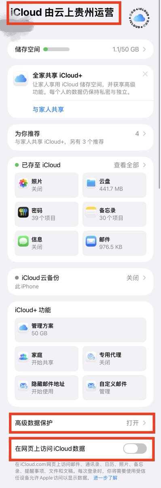
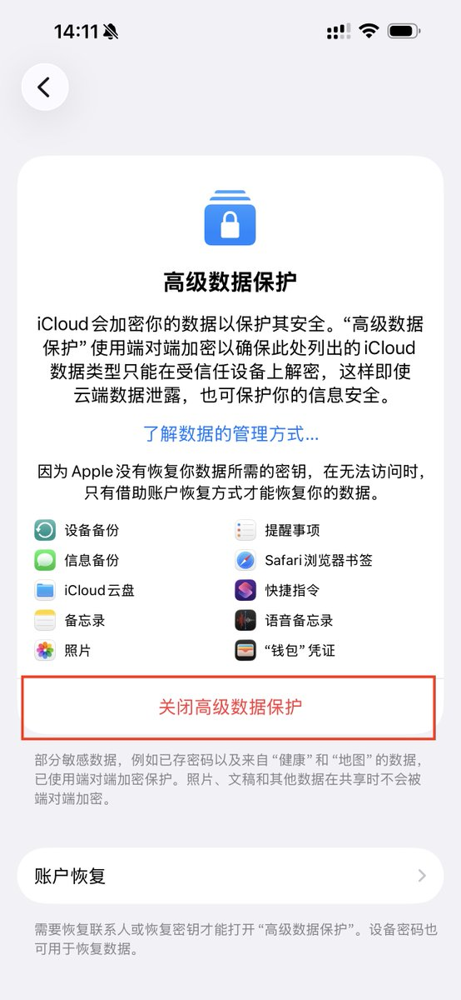
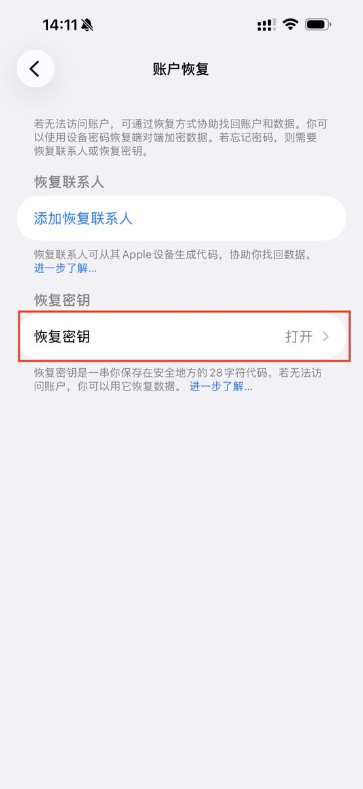

这人是不是脑子有问题🤣
只有国内id才能下的app还有什么必要保存到icloud还大费周章的加密？人家想要干你直接去调不就好了🤡
还有，用国内id下载的app数据也可以在切换id以后存在别的区的id上🤡🤡🤡
纯纯小丑一个
别反驳我，因为我有7个不同地区的Apple ID

只有国内id才能下的app还有什么必要保存到icloud还大费周章的加密？人家想要干你直接去调不就好了🤡
还有，用国内id下载的app数据也可以在切换id以后存在别的区的id上🤡🤡🤡
纯纯小丑一个
别反驳我，因为我有7个不同地区的Apple ID



国内的苹果账号，iCloud数据是放在云上贵州的。如果你担心数据隐私问题，我教你几步搞定：1. 打开iCloud设置最下面的高级数据保护，并且关闭网页访问iCloud；2. 在高级数据保护页面打开保护功能；3. 把私钥打印出来保存。没有私钥，云上贵州也看不了你的数据了。切记打开！ https://t.co/lJeInf75bJ